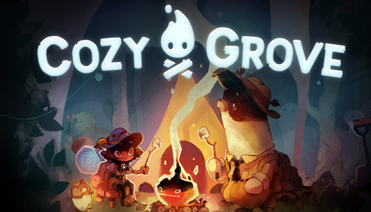

Cozy Grove
Cozy Grove é um jogo com um design fofo, que trata de um assunto delicado, e muitas vezes deixado de lado, a morte. Você joga como uma escoteira/o espectral, para crescer dentro do escotismo você foi mandada para a ilha de Cozy Grove com o objetivo de ajudar os ursos da ilha a transcenderem.
Além de cuidar dos ursos, você cuida de outros animais, árvores e flores e assim ajuda a trazer a ilha de volta a vida, podendo decorá-la e iluminá-la. Cozy Grove foi desenvolvido e distribuído por Spryfox e está disponível em diversas plataformas online.